अर्थशास्त्र (कक्षा 10) - अध्याय 4
वैश्वीकरण और भारतीय अर्थव्यवस्था (Globalization and the Indian Economy)
🛍️ भारतीय बाजार में क्रांतिकारी बदलाव
- आधुनिक उपभोक्ता विकल्प: आज भारत के बाजारों में दुनिया के शीर्ष ब्रांड्स के डिजिटल कैमरे, मोबाइल फोन, टेलीविजन और परिधान आसानी से उपलब्ध हैं।
- ऑटोमोबाइल क्षेत्र में बदलाव:
- 1990 से पूर्व: भारतीय सड़कों पर केवल दो मुख्य कारें (एंबेसडर और फिएट/पद्मिनी) ही दिखाई देती थीं।
- वर्तमान स्थिति: आज विश्व की लगभग सभी शीर्ष कार निर्माता कंपनियां (हुंडई, टोयोटा, होंडा, फोर्ड, सुजुकी आदि) भारत में नवीनतम मॉडल बेच रही हैं।
- बाजारों का तीव्र रूपांतरण: मात्र दो से तीन दशकों में भारतीय बाजार सीमित विकल्प वाले बाजार से बदलकर विश्वस्तरीय प्रतिस्पर्धी बाजार बन चुका है।
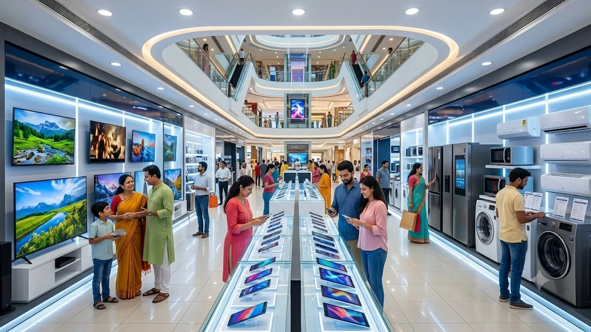
🖼️ चित्र 4.1: आधुनिक भारतीय उपभोक्ता बाजार (Modern Consumer Variety)
आधुनिक शॉपिंग मॉल में स्मार्ट इलेक्ट्रॉनिक्स, गैजेट्स और अंतरराष्ट्रीय उपभोक्ता वस्तुओं के प्रचुर विकल्प।
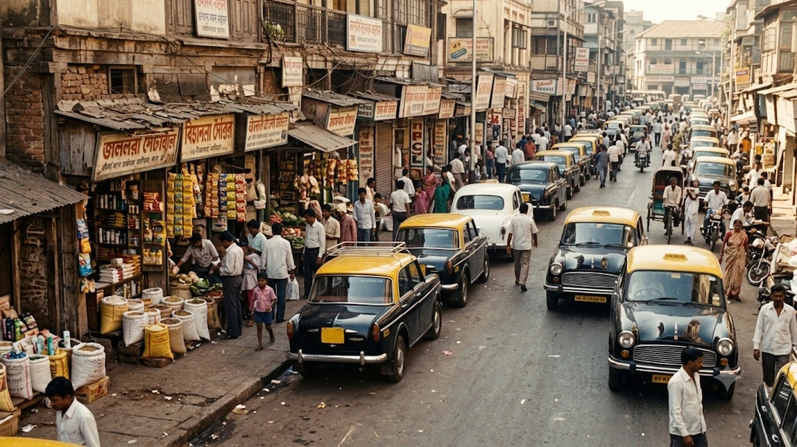
🚗 चित्र 4.2: 1990 से पूर्व का भारतीय बाजार (Pre-1991 Restricted Market)
उदारीकरण से पूर्व भारतीय सड़कों पर केवल एंबेसडर व पद्मिनी कारें और दुकानों में सीमित स्थानीय उत्पाद ही मिलते थे।
🏢 बहुराष्ट्रीय कंपनी (MNC - Multinational Corporation)
- परिभाषा: बहुराष्ट्रीय कंपनी वह कंपनी है जो एक से अधिक देशों में उत्पादन पर स्वामित्व या नियंत्रण रखती है।
- कार्यालय व कारखानों की स्थापना: MNCs उन क्षेत्रों में अपने कार्यालय और कारखाने स्थापित करती हैं जहाँ उन्हें सस्ता श्रम, कुशल कार्यबल और अन्य अनुकूल संसाधन कम लागत पर मिलते हैं।
- उद्देश्य: उत्पादन लागत में 50% से 60% तक की बचत करना और अधिक से अधिक वैश्विक लाभ अर्जित करना।
- उत्पादन का जटिल भौगोलिक विभाजन (NCERT क्लासिक उदाहरण):
- अमेरिका/यूरोप: उच्च-स्तरीय अनुसंधान (R&D) और औद्योगिक उत्पादों का डिजाइन तैयार करना।
- चीन व पूर्वी एशिया: कम लागत पर विनिर्माण (Manufacturing) एवं बड़े पैमाने पर पार्ट्स बनाना।
- मेक्सिको व पूर्वी यूरोप: अमेरिका और यूरोपीय बाजारों के निकट होने के कारण अंतिम उत्पादों की त्वरित असेंबली।
- भारत: कुशल अंग्रेजी-भाषी इंजीनियर एवं ग्राहक सेवा हेतु 24×7 आधुनिक BPO व कॉल सेंटर सपोर्ट।
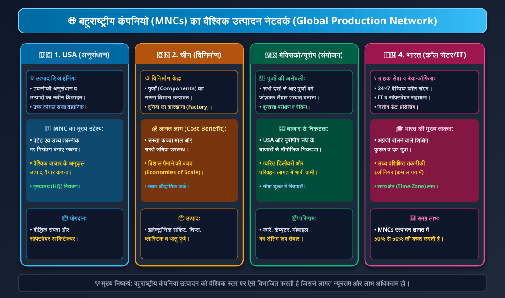
📊 चार्ट 4.1: बहुराष्ट्रीय कंपनी का वैश्विक उत्पादन मॉडल (Global Production Chain)
डिजाइन (USA) $
ightarrow$ कलपुर्जे निर्माण (चीन) $
ightarrow$ असेंबली (मेक्सिको) $
ightarrow$ आईटी व ग्राहक सेवा (भारत) का संपूर्ण प्रवाह।
🏙️ चित्र 4.3: बहुराष्ट्रीय कंपनी (MNC) का मुख्यालय (Global Headquarters)
वैश्विक स्तर पर उत्पादन, निवेश और विपणन की केंद्रीय रणनीति बनाने वाला आधुनिक बहुराष्ट्रीय मुख्यालय।
🔬 चित्र 4.4: अनुसंधान व उत्पाद डिजाइन (R&D in Developed Nations)
अत्याधुनिक 3D मॉडलिंग और सॉफ्टवेयर सिमुलेशन द्वारा नए उत्पादों का नवाचार व प्रोटोटाइप डिजाइन।
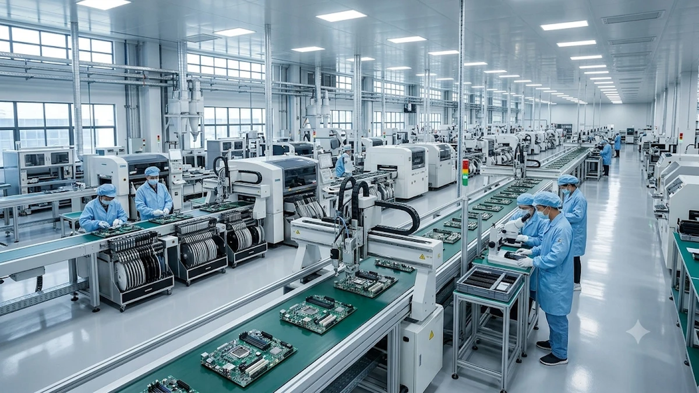
🏭 चित्र 4.5: विशाल विनिर्माण केंद्र (Mass Manufacturing in Asia)
सस्ते श्रम और विशाल इंफ्रास्ट्रक्चर की बदौलत दुनिया भर के लिए इलेक्ट्रॉनिक्स कलपुर्जों का उत्पादन।
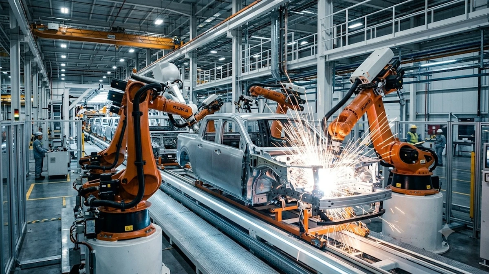
🤖 चित्र 4.6: स्वचालित असेंबली लाइन (Robotic Assembly Plants)
बाजारों के समीप रोबोटिक आर्म्स द्वारा कार और इलेक्ट्रॉनिक्स उपकरणों की त्वरित असेंबली।
📞 चित्र 4.7: भारत का आईटी व BPO क्षेत्र (IT & Customer Support in India)
अंग्रेजी-भाषी कुशल युवाओं द्वारा विश्वभर के ग्राहकों को 24×7 तकनीकी व ग्राहक सहायता सेवाएं।
🌐 विदेशी निवेश (Foreign Investment) एवं 4 मार्ग
- विदेशी निवेश: बहुराष्ट्रीय कंपनियों (MNCs) द्वारा लाभ कमाने के उद्देश्य से भूमि, भवन, मशीनें और अन्य उपकरण खरीदने में किए गए धन व्यय को 'विदेशी निवेश' कहते हैं।
- उत्पादन को जोड़ने के 4 प्रमुख तरीके:
- स्थानीय कंपनियों के साथ संयुक्त उपक्रम (Joint Venture):
- MNCs स्थानीय कंपनी के साथ मिलकर साझेदारी में उत्पादन करती हैं।
- स्थानीय कंपनी को लाभ: अतिरिक्त पूंजी निवेश एवं नवीनतम आधुनिक तकनीक की प्राप्ति।
- उदाहरण: फोर्ड मोटर्स और महिंद्रा एंड महिंद्रा (1995)।
- स्थानीय कंपनियों का सीधा अधिग्रहण (Buying Up Local Companies):
- यह MNCs का सबसे आम तरीका है। स्थानीय कंपनी को खरीदकर अपने उत्पादन का त्वरित विस्तार करना।
- NCERT केस: अमेरिकी MNC कारगिल फूड्स (Cargill Foods) ने भारत की परख फूड्स (Parakh Foods) को खरीदा। परख फूड्स के 4 बड़े तेल रिफाइनरी प्लांट और विशाल विपणन नेटवर्क पर कारगिल का एकाधिकार हो गया (50 लाख पैकेट तेल दैनिक क्षमता)।
- छोटे उत्पादकों को अनुबंध पर ऑर्डर देना (Contract Manufacturing / Outsourcing):
- गारमेंट्स, जूते-चप्पल और खेल के सामान में MNCs छोटे उत्पादकों को माल बनाने का ऑर्डर देती हैं और फिर अपने ब्रांड नेम से वैश्विक बाजारों में ऊंचे दामों पर बेचती हैं।
- कड़ी प्रतिस्पर्धा और आपूर्ति श्रृंखला नियंत्रण:
- स्थानीय कंपनियों के साथ कड़ी प्रतिस्पर्धा करके या उन्हें अपनी आपूर्ति श्रृंखला (Supply Chain) में शामिल करके नियंत्रण स्थापित करना।
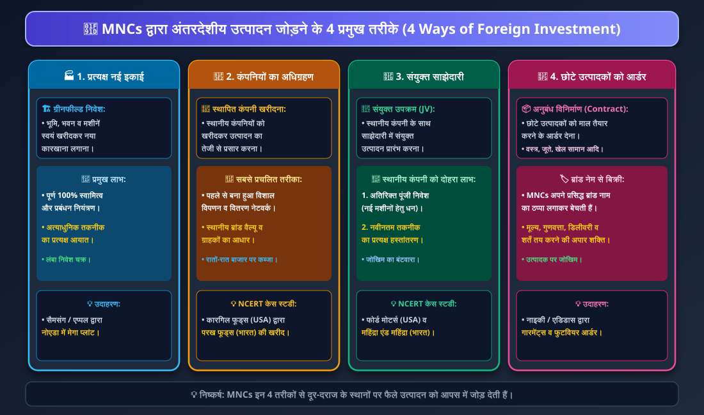
📊 चार्ट 4.2: अंतरदेशीय उत्पादन जोड़ने के 4 तरीके (4 Modes of Global Production)
संयुक्त उपक्रम, स्थानीय कंपनियों का अधिग्रहण (कारगिल केस), अनुबंध आउटसोर्सिंग व कड़ी प्रतिस्पर्धा का तुलनात्मक मॉडल।
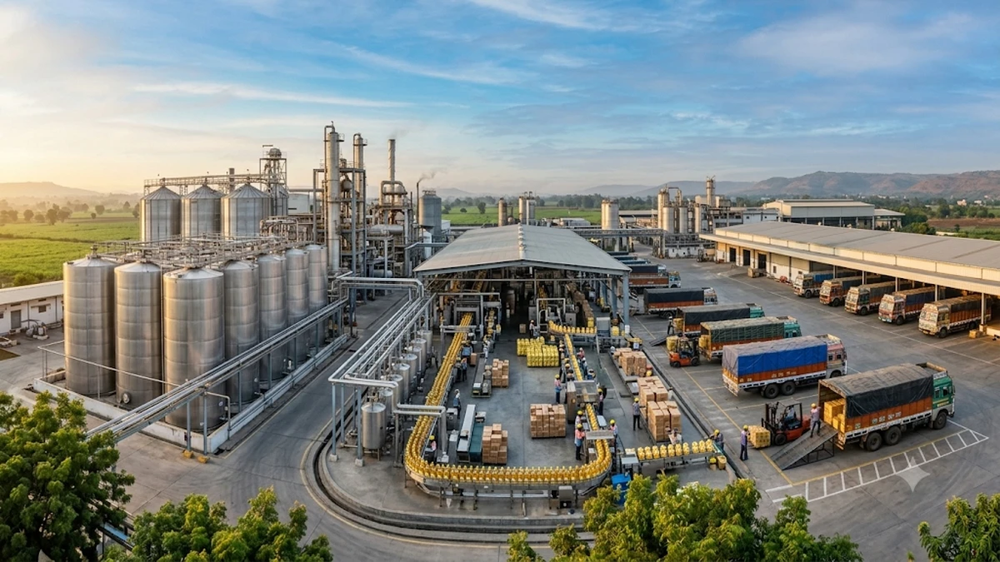
🛢️ चित्र 4.8: स्थानीय कंपनी का अधिग्रहण (Cargill & Parakh Foods Case)
कारगिल फूड्स द्वारा परख फूड्स के अधिग्रहण के बाद अत्याधुनिक रिफाइनरी और विशाल खाद्य तेल पैकेजिंग बुनियादी ढांचा।
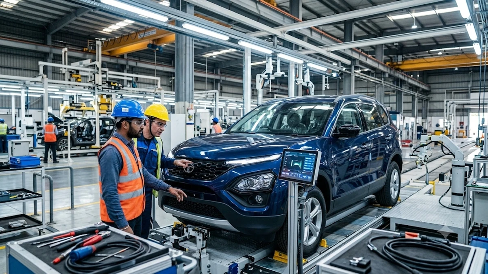
🤝 चित्र 4.9: संयुक्त उपक्रम (Indo-Global Automotive Joint Venture)
भारतीय व विदेशी इंजीनियरों का संयुक्त सहयोग, जिसमें आधुनिक तकनीक व स्थानीय विनिर्माण क्षमता का संगम हुआ।
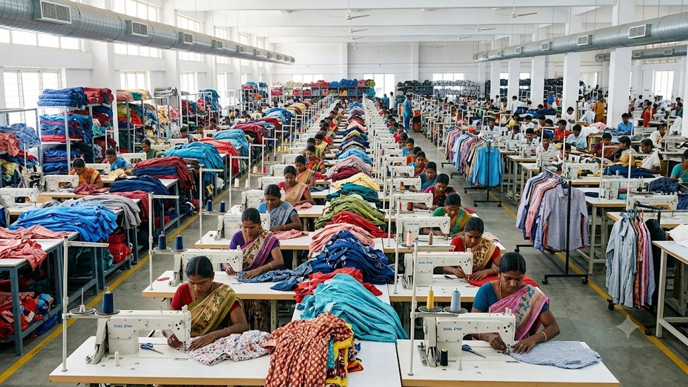
🧵 चित्र 4.10: अनुबंध विनिर्माण (Apparel Contract Manufacturing)
विश्वस्तरीय ब्रांड्स के लिए भारतीय परिधान कारखानों में कुशल कामगारों द्वारा गुणवत्तापूर्ण वस्त्र सिलाई।
🚢 विदेशी व्यापार की भूमिका
- उत्पादकों के लिए अवसर: उत्पादक अपने देश के घरेलू बाजारों से बाहर निकलकर विश्व के अन्य देशों के बाजारों में अपनी वस्तुएं बेच सकते हैं।
- उपभोक्ताओं के लिए लाभ: उपभोक्ताओं को कम कीमत पर उत्तम गुणवत्ता और विविध प्रकार के विकल्प मिलते हैं।
- मूल्यों का साम्य: व्यापार के माध्यम से विभिन्न देशों के बाजारों में समान वस्तुओं की कीमतें एक जैसी होने लगती हैं।
🧸 NCERT केस स्टडी: भारत में चीनी खिलौनों का प्रभाव (Chinese Toys Case)
- कारण: चीनी खिलौना निर्माताओं को भारत में खिलौने निर्यात करने का अवसर मिला। प्लास्टिक के खिलौने नए डिजाइन और बहुत सस्ते थे।
- भारतीय उपभोक्ताओं पर प्रभाव: भारतीय खरीदारों को अधिक विकल्प और सस्ते, आकर्षक खिलौने मिले। एक ही वर्ष में 70% से 80% दुकानों में भारतीय खिलौनों की जगह चीनी खिलौनों ने ले ली।
- चीनी निर्माताओं पर प्रभाव: चीन के खिलौना निर्माताओं को भारी व्यापारिक लाभ हुआ और उनका व्यवसाय तेजी से बढ़ा।
- भारतीय खिलौना निर्माताओं पर प्रभाव: भारतीय पारंपरिक खिलौना निर्माताओं को भारी घाटा हुआ और कई लघु कुटीर इकाइयां बंद हो गईं।
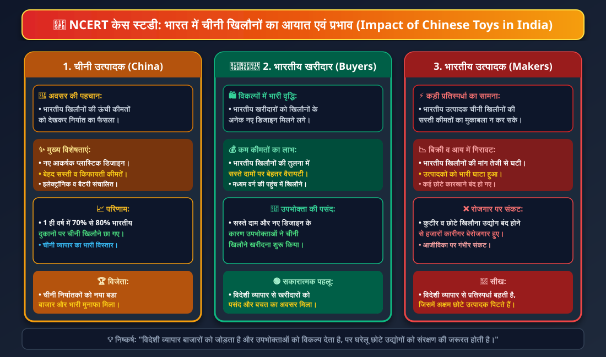
📊 चार्ट 4.3: चीनी खिलौने केस स्टडी (Impact of Chinese Toys in India)
सस्ते मूल्य व आकर्षक डिजाइन $
ightarrow$ 70-80% बाजार पर कब्जा $
ightarrow$ उपभोक्ता लाभ vs भारतीय लघु खिलौना उद्योग का संकट।
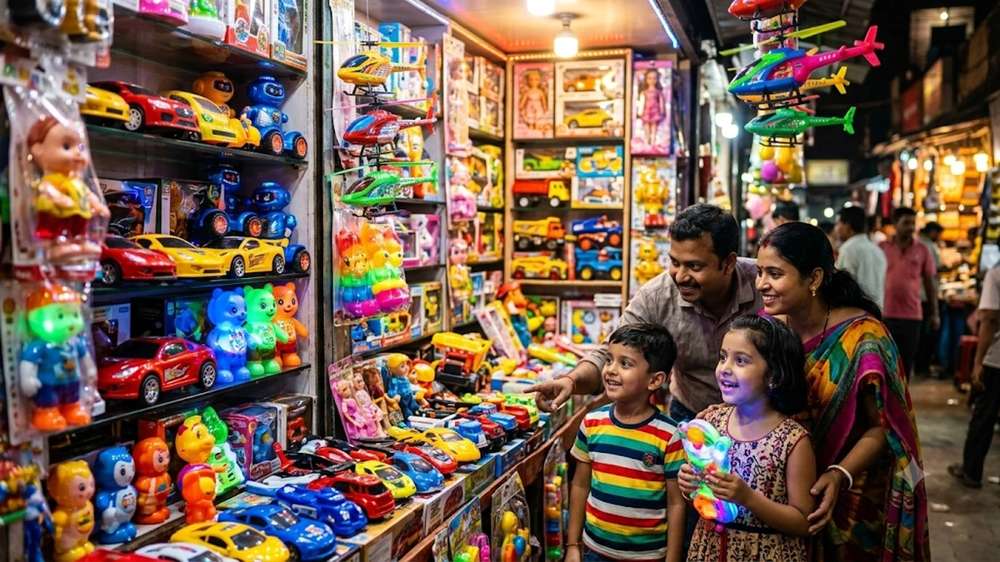
🧸 चित्र 4.11: भारतीय दुकानों में चीनी खिलौने (Chinese Toys in Retail Markets)
आकर्षक डिजाइन, बैटरी चालित कारें व सस्ते रोबोटिक खिलौने जिन्होंने भारतीय बाजार पर एकाधिकार किया।
🪵 चित्र 4.12: पारंपरिक कारीगरों का संघर्ष (Traditional Toy Artisan)
हस्तनिर्मित लकड़ी और मिट्टी के पारंपरिक भारतीय खिलौनों की बिक्री में आई गिरावट और कारीगरों का संकट।
🌍 वैश्वीकरण (Globalization)
- परिभाषा: विभिन्न देशों के बीच तीव्र एकीकरण या परस्पर संबंध की प्रक्रिया को 'वैश्वीकरण' कहते हैं।
- वैश्वीकरण की प्रक्रिया में MNCs सबसे केंद्रीय भूमिका निभा रही हैं।
- देशों के मध्य जुड़ाव के 3 मुख्य माध्यम:
- वस्तुओं और सेवाओं का प्रवाह (Flow of Goods & Services)
- पूंजी और विदेशी निवेश का प्रवाह (Flow of Capital & Investments)
- प्रौद्योगिकी एवं लोगों का आवागमन (Flow of Technology & Migration of People for Jobs/Education)
⚡ वैश्वीकरण को सक्षम बनाने वाले 2 प्रमुख कारक
- 1. परिवहन प्रौद्योगिकी में तीव्र सुधार (Transportation Revolution):
- विगत 50 वर्षों में परिवहन तकनीक में भारी प्रगति हुई है। लंबी दूरियों तक वस्तुओं की ढुलाई बहुत तेज गति से और अत्यंत कम लागत पर संभव हो गई है।
- कंटेनर परिवहन (Containerization): विशालकाय कंटेनरों में माल भरकर जहाजों, ट्रेनों और ट्रकों पर सीधे लादा जा सकता है। इससे बंदरगाहों पर लोडिंग-अनलोडिंग का समय और लागत दोनों में भारी कमी आई।
- वायु परिवहन (Air Freight): हवाई माल ढुलाई की लागत घटने से शीघ्र खराब होने वाली वस्तुएं और उच्च मूल्यवान उपकरण कुछ ही घंटों में विश्वभर में पहुंचाए जा रहे हैं।
- 2. सूचना एवं संचार प्रौद्योगिकी में क्रांति (Information & Communication Technology - ICT):
- टेलीकम्यूनिकेशन, कंप्यूटर, मोबाइल फोन, सैटेलाइट और इंटरनेट (World Wide Web) ने पूरी दुनिया को एक वैश्विक गांव (Global Village) बना दिया है।
- NCERT लंदन मैगजीन केस स्टडी: लंदन के पाठकों के लिए एक समाचार पत्रिका का संपादन व डिजाइन दिल्ली के एक आधुनिक स्टूडियो में कंप्यूटर सॉफ्टवेयर द्वारा किया जाता है। इंटरनेट द्वारा लंदन से टेक्स्ट भेजा जाता है, दिल्ली में डिजाइनिंग होती है, और लंदन के एक बैंक से दिल्ली के बैंक खाते में तुरंत ई-बैंकिंग द्वारा भुगतान हो जाता है।
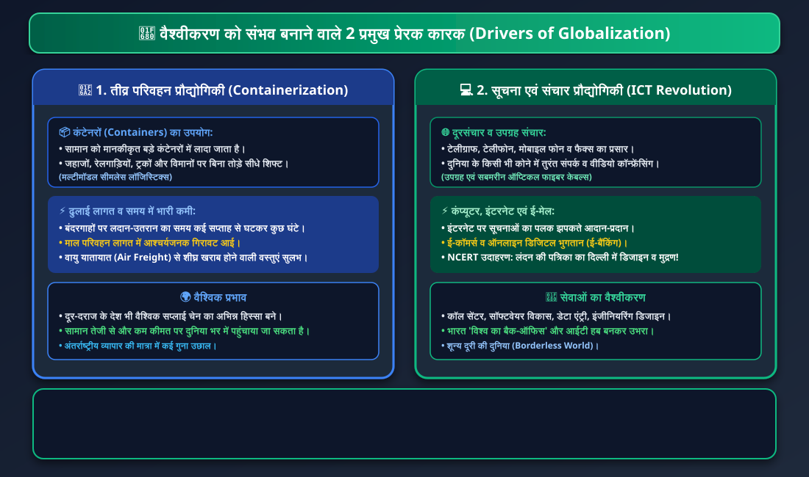
📊 चार्ट 4.4: वैश्वीकरण के 2 मुख्य प्रेरक कारक (Two Drivers of Globalization)
कंटेनर लॉजिस्टिक्स व हवाई ढुलाई + टेलीकॉम, 5G, सैटेलाइट, सबमरीन ऑप्टिकल फाइबर व इंटरनेट का संयुक्त प्रभाव।
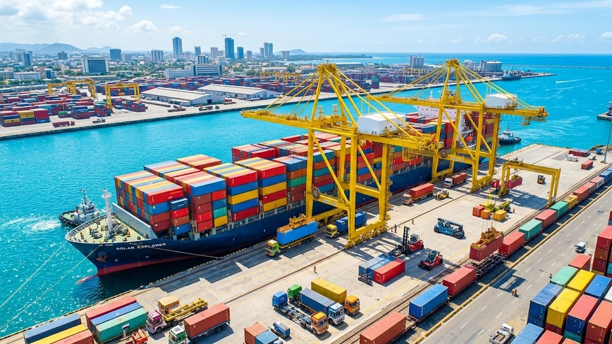
🚢 चित्र 4.13: कंटेनर परिवहन क्रांति (Containerization & Global Seaports)
हजारों मानकीकृत कंटेनरों से लदे विशाल मालवाहक जहाज, जिन्होंने वैश्विक व्यापार की लागत को 90% तक घटा दिया।
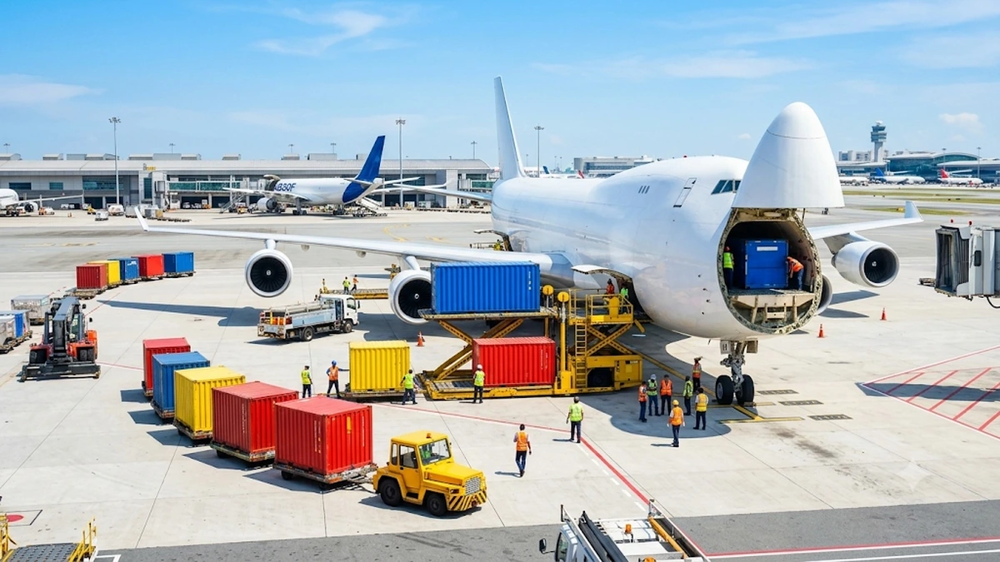
✈️ चित्र 4.14: हवाई माल ढुलाई (Air Freight Cargo Logistics)
विशाल कार्गो विमानों द्वारा कुछ ही घंटों में अंतरराष्ट्रीय सीमाओं के पार आवश्यक उपकरणों व उत्पादों की आपूर्ति।
📡 चित्र 4.15: सूचना एवं संचार क्रांति (ICT & Digital Connectivity)
हाई-स्पीड 5G टेलीकॉम टॉवर, ऑप्टिकल फाइबर केबल्स और सैटेलाइट्स द्वारा मिली सेकंड्स में वैश्विक डेटा स्थानांतरण।
💻 चित्र 4.16: दिल्ली डिजाइन स्टूडियो - लंदन पत्रिका (Delhi IT for London Client)
इंटरनेट द्वारा लंदन से डेटा प्राप्त कर दिल्ली के युवा डिजाइनरों द्वारा 4K मॉनिटर्स पर अंतरराष्ट्रीय पत्रिका का लेआउट तैयार करना।
🚧 व्यापार अवरोधक (Trade Barriers)
- परिभाषा: सरकार द्वारा विदेशी व्यापार को नियमित या नियंत्रित करने के लिए लगाए गए प्रतिबंधों (जैसे- आयात कर / टैरिफ और कोटा) को 'व्यापार अवरोधक' कहते हैं।
- स्वतंत्रता के बाद भारत की नीति (1950-1990):
- भारतीय उद्योग नवजात (Infant) अवस्था में थे। इसलिए विदेशी प्रतिस्पर्धा से बचाने के लिए केवल अनिवार्य वस्तुओं (पेट्रोलियम, मशीनरी, उर्वरक) के आयात की अनुमति थी।
- 1991 का ऐतिहासिक मोड़ (उदारीकरण - Liberalisation):
- 1991 में सरकार ने महसूस किया कि भारतीय उत्पादकों को विश्वभर के उत्पादकों के साथ प्रतिस्पर्धा करनी चाहिए ताकि गुणवत्ता में सुधार हो सके।
- उदारीकरण की परिभाषा: सरकार द्वारा व्यापार और निवेश पर से अनावश्यक प्रतिबंधों व नियंत्रणों को हटाने की प्रक्रिया 'उदारीकरण' (Liberalisation) कहलाती है।
- आयात-निर्यात पर से लाइसेंसिंग व्यवस्था और टैरिफ अवरोधकों को बड़े पैमाने पर समाप्त कर दिया गया।
🏗️ विदेशी निवेश को आकर्षित करने के कदम: विशेष आर्थिक क्षेत्र (SEZ)
- विशेष आर्थिक क्षेत्र (SEZ - Special Economic Zones): केंद्र और राज्य सरकारों द्वारा विदेशी कंपनियों को आकर्षित करने के लिए स्थापित विश्वस्तरीय औद्योगिक पार्क।
- SEZ की प्रमुख सुविधाएं:
- बिजली, पानी, सड़क, परिवहन, भंडारण और मनोरंजन की विश्वस्तरीय सुविधाएं।
- कर छूट (Tax Holiday): SEZ में उत्पादन इकाइयां स्थापित करने वाली कंपनियों को प्रारंभिक 5 वर्षों तक कोई आयकर (Tax) नहीं देना पड़ता।
- श्रम कानूनों में लचीलापन: विदेशी कंपनियों को आकर्षित करने के लिए श्रम नियमों में विशेष छूट दी जाती है।
🏭 चित्र 4.17: विशेष आर्थिक क्षेत्र (Special Economic Zone - SEZ)
चौड़ी सड़कें, निरंतर सौर/विद्युत आपूर्ति, कांच की आधुनिक फैक्ट्रियां और टैक्स छूट युक्त विश्वस्तरीय इंडस्ट्रियल पार्क।
🏛️ विश्व व्यापार संगठन (WTO)
- स्थापना: 1995 (मुख्यालय: जिनेवा, स्विट्जरलैंड)। जुलाई 2016 तक विश्व के 164 देश इसके सदस्य हैं।
- उद्देश्य: अंतरराष्ट्रीय व्यापार को मुक्त, खुला और बिना किसी बाधा के संचालित करना तथा सभी देशों के लिए व्यापार नियम बनाना।
- विवाद और दोहरा मापदंड (Debate on Unfair Trade Practices):
- सैद्धांतिक रूप से WTO सभी देशों के लिए मुक्त व्यापार की वकालत करता है।
- व्यवहार में दोहरा मापदंड: अमेरिका और यूरोपीय संघ जैसे विकसित देश अपने किसानों को भारी सब्सिडी (Financial Grants) देते हैं, जिससे उनके कृषि उत्पाद विश्व बाजार में कृत्रिम रूप से अत्यंत सस्ते हो जाते हैं।
- वहीं दूसरी ओर, WTO के नियमों के तहत विकासशील देशों (जैसे भारत) पर दबाव डाला जाता है कि वे अपने गरीब किसानों को दी जाने वाली उर्वरक व बीज सब्सिडी को घटाएं। यह विकासशील देशों के साथ अन्यायपूर्ण है।
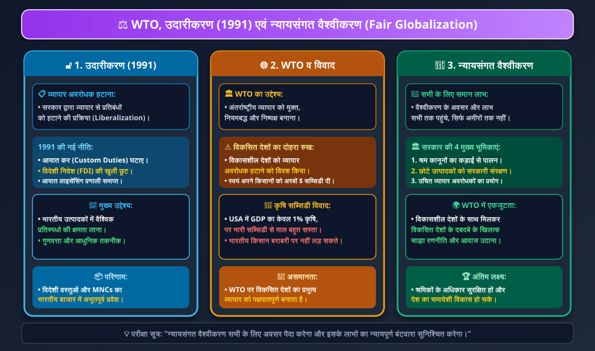
📊 CHART 4.5: WTO और न्यायसंगत वैश्वीकरण (WTO & Fair Globalization)
1991 उदारीकरण, WTO के दोहरे मापदंड (सब्सिडी विवाद) एवं न्यायसंगत वैश्वीकरण सुनिश्चित करने के सरकारी उपाय।
📈 वैश्वीकरण का सकारात्मक प्रभाव (Positive Impacts)
- उपभोक्ताओं को लाभ: संपन्न शहरी उपभोक्ताओं को बेहतर गुणवत्ता वाली कारें, इलेक्ट्रॉनिक्स, शीतल पेय और फास्ट फूड कम कीमतों पर उपलब्ध हुए।
- नए रोजगारों का सृजन: सेल फोन, ऑटोमोबाइल, इलेक्ट्रॉनिक्स, बैंकिंग और आईटी सेवाओं में लाखों नए उच्च-वेतन रोजगार पैदा हुए।
- भारतीय कंपनियां बनीं बहुराष्ट्रीय (Indian Multinationals):
- टाटा मोटर्स (Tata Motors): ऑटोमोबाइल / कारें।
- इन्फोसिस (Infosys): सूचना प्रौद्योगिकी (IT)।
- रेनबैक्सी (Ranbaxy): दवाइयां / फार्मास्युटिकल्स।
- एशियन पेंट्स (Asian Paints): रंग-रोगन व पेंट्स।
- सुंदरम फास्टनर्स (Sundram Fasteners): नट और बोल्ट।
📉 वैश्वीकरण का नकारात्मक प्रभाव एवं चुनौतियां (Challenges & Negative Impacts)
- लघु व कुटीर उद्योगों पर संकट: बैटरी, कैपेसिटर, प्लास्टिक खिलौने, टायर्स, डेयरी उत्पाद और खाद्य तेल बनाने वाली छोटी भारतीय इकाइयां सस्ती विदेशी वस्तुओं से प्रतिस्पर्धा न कर पाने के कारण बंद हो गईं और लाखों मजदूर बेरोजगार हुए।
- श्रमिकों के जीवन पर अनिश्चितता: लागत घटाने के लिए MNCs और निर्यातक अब श्रमिकों को स्थायी रोजगार देने के बजाय 'अस्थायी / अनुबंध' (Flexibility in Labor Laws) पर रखते हैं। लंबे कार्य के घंटे, कम मजदूरी और सामाजिक सुरक्षा (PF, पेंशन) का अभाव श्रमिकों की स्थिति दयनीय बनाता है।
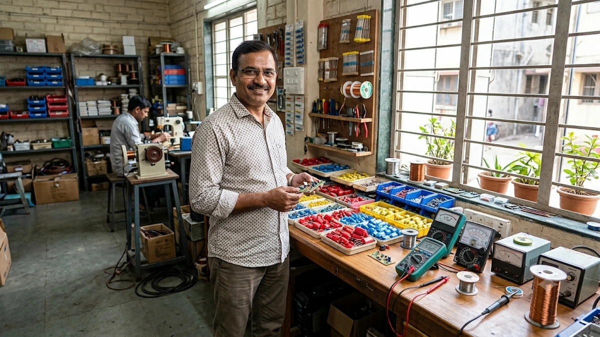
⚙️ चित्र 4.18: लघु उद्योगों का संघर्ष (Small Scale Industry Struggle)
सस्ते विदेशी इलेक्ट्रॉनिक कंपोनेंट्स के आयात से घरेलू विनिर्माण इकाइयों पर कड़ी प्रतिस्पर्धा का दबाव।
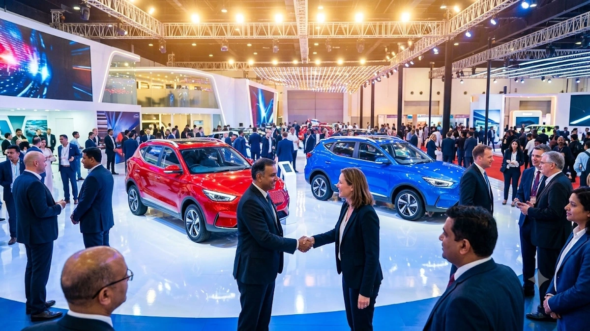
🌟 चित्र 4.19: भारतीय बहुराष्ट्रीय कंपनियां (Indian MNCs Going Global)
टाटा, इन्फोसिस और महिंद्रा जैसी भारतीय कंपनियों की वैश्विक स्तर पर मजबूत उपस्थिति और अंतरराष्ट्रीय अनुबंध।
⚖️ न्यायसंगत वैश्वीकरण (Fair Globalization) क्या है?
- परिभाषा: न्यायसंगत वैश्वीकरण वह व्यवस्था है जो समाज के सभी वर्गों (श्रमिकों, किसानों, छोटे उत्पादकों और उपभोक्ताओं) के लिए समान अवसर पैदा करे और यह सुनिश्चित करे कि वैश्वीकरण के लाभों में सबकी उचित हिस्सेदारी हो।
- सरकार की महत्वपूर्ण भूमिका (Role of Government):
- श्रम कानूनों का कड़ाई से क्रियान्वयन: सरकार यह सुनिश्चित करे कि श्रमिकों के अधिकारों की रक्षा हो और उन्हें उचित वेतन व सुरक्षित कार्यदशाएं मिलें।
- छोटे उत्पादकों को संरक्षण व सहायता: जब तक छोटे उद्योग प्रतिस्पर्धा करने में सक्षम न हो जाएं, तब तक उन्हें सरकारी सहायता, सस्ती बिजली और प्रौद्योगिकी उपलब्ध कराना।
- व्यापार अवरोधकों का रणनीतिक उपयोग: घरेलू किसानों और संवेदनशील उद्योगों को अनुचित विदेशी डंपिंग से बचाने के लिए आवश्यकता पड़ने पर आयात शुल्क (Taxes) का उपयोग करना।
- WTO में विकासशील देशों का एकजुट मोर्चा: विकसित देशों के वर्चस्व और अन्यायपूर्ण सब्सिडी नियमों के खिलाफ अन्य विकासशील देशों के साथ मिलकर संयुक्त मोर्चा बनाना।
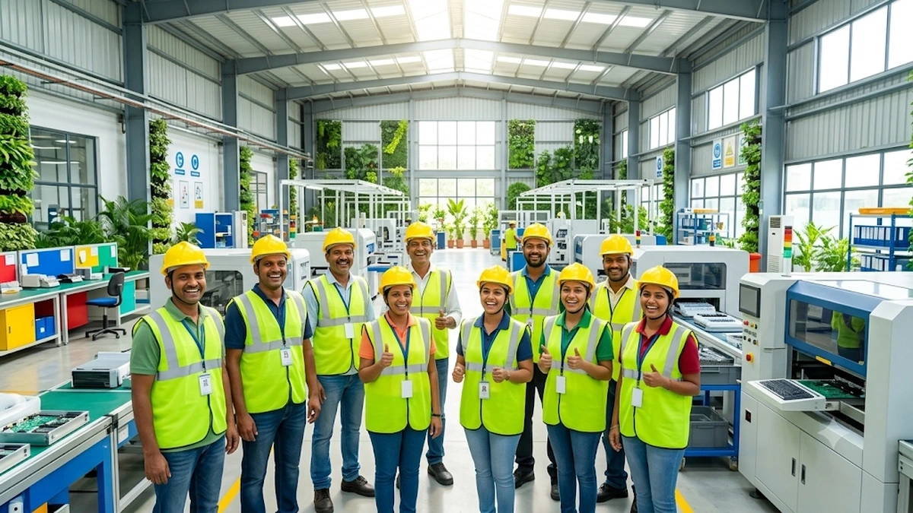
🤝 चित्र 4.20: न्यायसंगत वैश्वीकरण एवं श्रमिक गरिमा (Fair Globalization & Labor Dignity)
सुरक्षित कार्य वातावरण, उचित वेतन, निष्पक्ष श्रम अधिकार और समावेशी विकास का सशक्त प्रतीक।
| प्रमुख अवधारणा |
मुख्य विशेषता / अर्थ |
भारतीय अर्थव्यवस्था पर उदाहरण व प्रभाव |
| बहुराष्ट्रीय कंपनी (MNC) |
एक से अधिक देशों में उत्पादन पर स्वामित्व व नियंत्रण रखने वाली कंपनी। |
कारगिल फूड्स, फोर्ड मोटर्स; लागत में 50-60% बचत हेतु भारत में R&D/BPO केंद्र। |
| विदेशी निवेश |
MNCs द्वारा लाभ कमाने हेतु भूमि, भवन व मशीनरी खरीदने में किया गया व्यय। |
1991 के बाद भारत में भारी विदेशी मुद्रा व आधुनिक तकनीक का आगमन। |
| उदारीकरण (Liberalisation) |
व्यापार व निवेश पर से सरकारी प्रतिबंधों, लाइसेंसिंग व टैरिफ को हटाना। |
1991 की नई आर्थिक नीति; अंतरराष्ट्रीय उत्पादों की भारतीय बाजार में प्रचुरता। |
| विशेष आर्थिक क्षेत्र (SEZ) |
5 वर्ष तक कर छूट एवं विश्वस्तरीय इंफ्रास्ट्रक्चर युक्त औद्योगिक क्षेत्र। |
विदेशी कंपनियों को आकर्षित करने हेतु भारत में स्थापित आधुनिक इंडस्ट्रियल पार्क। |
| विश्व व्यापार संगठन (WTO) |
अंतरराष्ट्रीय मुक्त व्यापार का नियमन करने वाली 164 देशों की संस्था। |
विकसित देशों की अनुचित कृषि सब्सिडी के खिलाफ विकासशील देशों का संघर्ष। |
| न्यायसंगत वैश्वीकरण |
सभी वर्गों के लिए समान अवसर, श्रम सुरक्षा व लाभों का न्यायपूर्ण वितरण। |
श्रम कानूनों का पालन, लघु उद्योगों को समर्थन व विकासशील देशों का एकजुट मोर्चा। |